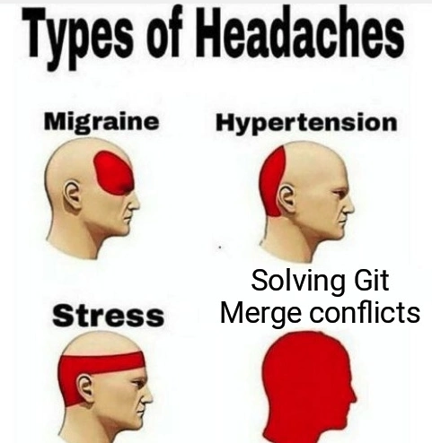
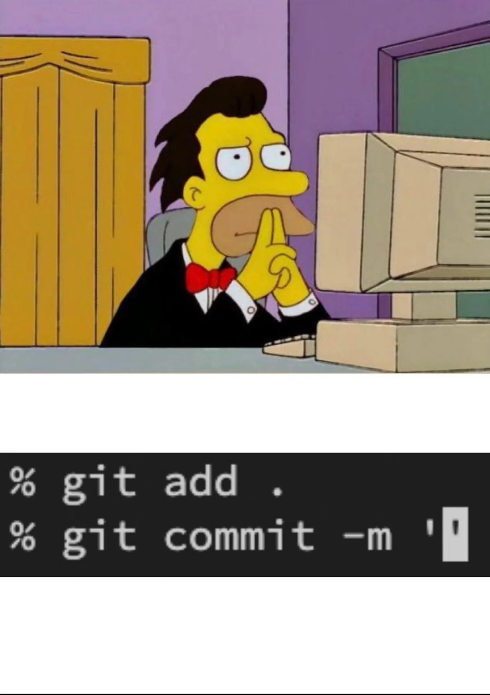
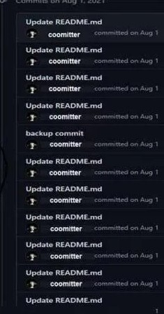
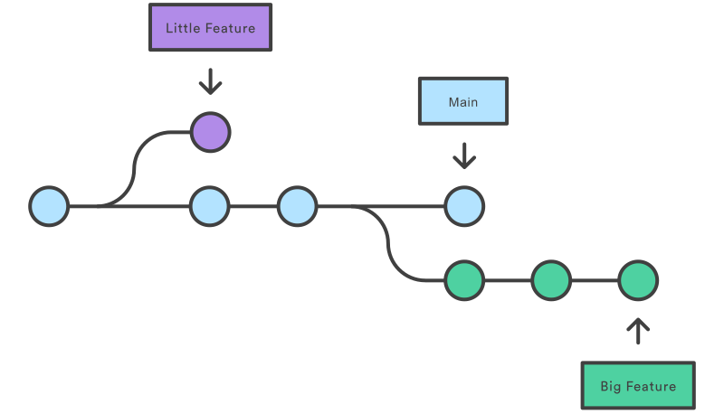
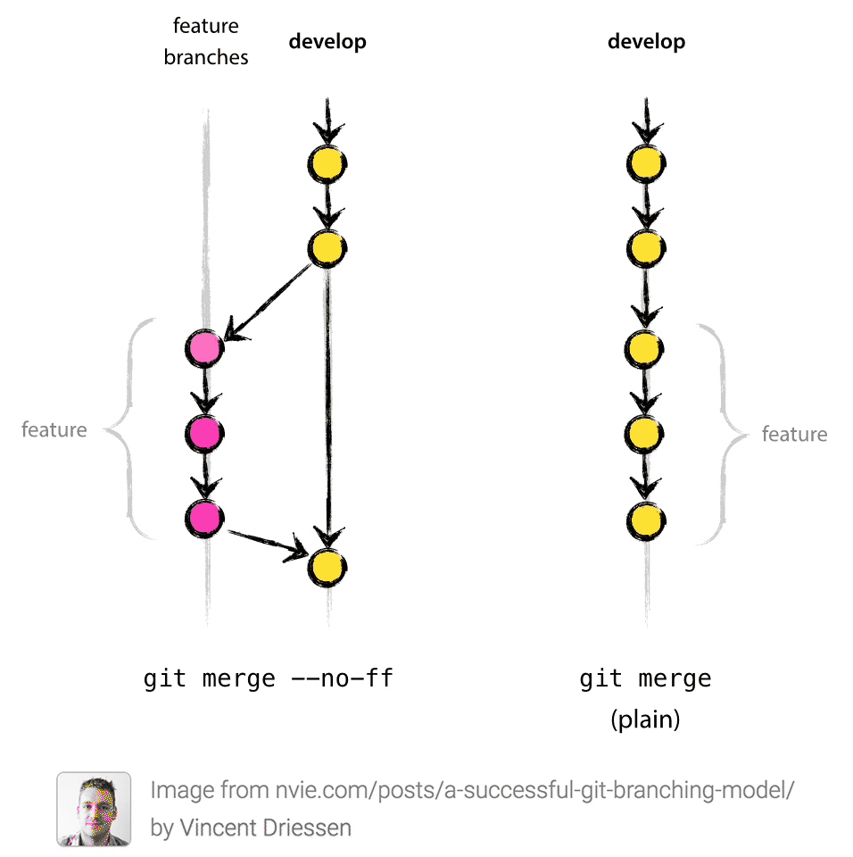
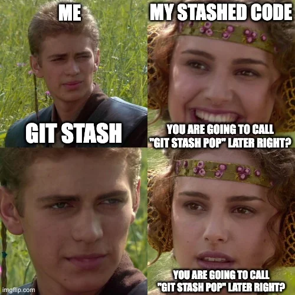

Sistemas de Control de Versiones de última generación
Fundamentos
¿Qué es un SCV?
¿Qué es un SCV?
Un SCV es un software que nos permite conocer información de la evolución y las modificaciones de nuestros proyectos.
Gracias a esto podemos:
- Mantener la última versión de los archivos que queramos.
- Volver a alguna versión anterior del software.
- Ramificar e integrar versiones de software con agilidad.
¿Qué es un SCV?
¡Un momento!
¡Todo esto lo podemos hacer a mano!

¿Qué es un SCV?
¿Qué aportan realmente los SCVs?
La gestión automática de los cambios que se realizan sobre el proyecto.
Restaurar cada uno de los ficheros a cualquiera de los estados anteriores por los que ha ido pasando.
Permitir la colaboración de diversos programadores en el desarrollo de un proyecto.
Un histórico de las acciones llevadas a cabo, cuándo y por quién… útil cuando colaboramos muchos.
¿Qué es un SCV?
¿Cuántos SCVs conocéis?
Terminología general de SCVs
Repositorio
Es la copia maestra donde se guardan todas las versiones de los archivos de un proyecto.
Copia local
La copia del repositorio en cada computador. Cada desarrollador tiene la suya propia.
Copia de trabajo
El proyecto que el desarrollador utiliza para trabajar.
Terminología general de SCVs
Importante
Aunque la copia local y la copia de trabajo puedan parecer lo mismo, no lo son. Los desarrolladores hacen cambios en la copia de trabajo, pero éstos no tienen por qué registrarse en la copia local.
Terminología general de SCVs
Check Out
La acción empleada para obtener una copia de trabajo desde el repositorio.
Check In
La acción empleada para llevar los cambios hechos en la copia de trabajo a la copia local del repositorio.
Terminología general de SCVs
Nota
¿Cómo se llaman estos términos en git?
Terminología general de SCVs
Push
La acción que traslada los contenidos de la copia local del repositorio de un programador a la copia maestra del mismo.
Update/Pull/Fetch&Merge/Rebase
Acción empleada para actualizar nuestra copia local del repositorio a partir de la copia maestra del mismo, además de actualizar la copia de trabajo con el contenido actual del repositorio local.
Terminología general de SCVs
Rama
Representa una línea de evolución de nuestro software. Podemos tener todas las que queramos, pero normalmente una es especial: master/main, trunk, etc…
Fusión de ramas
Acción de juntar los históricos de dos ramas.
Terminología general de SCVs
Conflicto
Situación que surge cuando dos desarrolladores hacen un check-in con cambios en la misma región del mismo fichero. Suele darse en la fusión de ramas. El SCV lo detecta, pero es el programador el que debe corregirlo.

Tipos de SCV
Por la forma de almacenar contenidos:
Centralizados: Hay un único repositorio compartido por todos los desarrolladores. Sólo un responsable o grupo de responsables pueden llevar a cabo tareas administrativas en este repositorio. Por ejemplo:
CVSySubversion.Distribuidos: Cada usuario tiene su propio repositorio. Los repositorios de todos los desarrolladores del proyecto pueden intercambiar información. Es habitual disponer de un repositorio central para sincronizar a todos. Por ejemplo:
git,MercurialoBazaar.
Tipos de SCV
Por la forma de modificar los contenidos de la copia local:
Colaborativos (copy-modify-merge, bloqueo optimista): Varios desarrolladores pueden estar modificando el mismo fichero simultáneamente. Pueden aparecer conflictos si varios desarrolladores modifican la misma parte del archivo.
Exclusivos (lock-modify-unlock, bloqueo pesimista): Sólo un desarrollador puede estar modificando un archivo a la vez; el resto sólo pueden leerlo. Una vez se han pasado los cambios al repositorio, ya lo puede modificar otro desarrollador, pero nuevamente sólo uno. Ejemplos:
RCSoVisual SourceSafe.
¡Suficiente teoría! ¡Vamos con Git!
Git good at Git
Por si no lo sabías
Linus Torvalds
Inventó git en 2005
Por si no lo sabías
Linus Torvalds
Inventó git en 2005
Fue consciente de que si git era fácil de usar, nos haría blandos. Así que eligió forjarnos en el fuego de la confusión y el dolor.
Un poquito de historia
Los desarrolladores del kernel de Linux emplean BitKeeper hasta 2005.
Linus comienza el desarrollo de
gitel 3 de abril de 2005 y lo anuncia el día 6 de abril.Gitse auto-hospeda el 7 de abril de 2005.Surgen herramientas para alojar repositorios remotos: GitHub, Bitbucket, GitLab…
Actualmente, es el SCV más importante del desarrollo de software.
Conceptos básicos de git
Toda la metainformación de git se guarda en un directorio que reside en la carpeta raíz de nuestro proyecto, el .git:
.git
|-- branches
|-- COMMIT_EDITMSG
|-- config
|-- description
|-- FETCH_HEAD (tras un fetch/pull)
|-- HEAD
|-- hooks
|-- index
|-- info
|-- logs
|-- objects
|-- ORIG_HEAD (tras reset, merge, rebase...)
+-- refsConceptos básicos de git
No hace falta que explique cómo añadir ficheros a un commit y cómo insertarlo… ¿no?

Conceptos básicos de git
Conceptos básicos de git
Sin embargo, ¿sabías que los commits tienen una cabecera y un cuerpo?
Tip
El primer -m de un commit es el título (cabecera). Si añadimos más -m, cada uno se añade al cuerpo del commit como un párrafo separado.
Conceptos básicos de git
Por ejemplo:
Conceptos básicos de git
Resultado en git log:
commit d3fdbef9cb466c26635a21f7c551bc3efaa49097 (HEAD -> master)
Author: antoniorv6 <ariosvila@gmail.com>
Date: Mon Dec 8 11:56:54 2025 +0100
feat: unify exception handling
Create a new exception handler that deals with all error cases in a
unified manner. This change simplifies the control flow and makes
error handling more predictable.Conceptos básicos de git
¡También nos podemos saltar la secuencia de add y commit!
Advertencia
-a solo incluye los ficheros ya rastreados (modificados o borrados). Los ficheros nuevos no entran: para ellos sigue siendo necesario git add.
¿Qué dice este historial?
* 4f1a2b3 cambios
* 9c8d7e6 arreglado
* 2b3c4d5 ahora sí
* 7e6f5a4 wip
* 1a2b3c4 asdf¿Qué cambió? ¿Se rompió algo? ¿Qué versión toca publicar?
¿Qué dice este historial?
* 4f1a2b3 docs(readme): add installation steps
* 9c8d7e6 fix(auth): handle expired tokens
* 2b3c4d5 feat(cart): add discount codes
* 7e6f5a4 refactor(cart): extract price calculator
* 1a2b3c4 test(cart): cover empty cart caseEsto es Conventional Commits.
Conventional Commits
Una convención para escribir mensajes de commit legibles por personas y por máquinas (changelogs y versiones automáticas).
Conventional Commits
| Tipo | Uso |
|---|---|
feat |
Nueva funcionalidad |
fix |
Corrección de un error |
docs |
Documentación |
refactor |
Reestructurar sin cambiar comportamiento |
| Tipo | Uso |
|---|---|
test |
Tests |
perf |
Rendimiento |
build / ci |
Dependencias / integración continua |
chore |
Mantenimiento |
Conventional Commits
Gracias a esta metodología podemos:
- Entender el historial de un vistazo.
- Generar changelogs automáticamente.
- Calcular la siguiente versión del software (versionado semántico).
- Lanzar procesos de CI/CD según el tipo de cambio.
Conventional Commits: estructura
<tipo>[ámbito opcional]: <descripción>
[cuerpo opcional]
[pie(s) opcional(es)]Por ejemplo:
fix(api): return 404 when user does not exist
Previously the endpoint returned 500 because the null user
was not checked before serialization.
Refs: #142Conventional Commits: estructura
- Tipo: qué clase de cambio es (
feat,fix…). - Ámbito (opcional): la parte del proyecto afectada, entre paréntesis:
feat(parser):. - Descripción: resumen breve del cambio, justo después de
:. - Cuerpo (opcional): el porqué y el contexto del cambio. Separado por una línea en blanco.
- Pies (opcionales): metadatos con formato
Clave: valor, comoRefs: #142oReviewed-by: Ana.
Conventional Commits: Tipos
La especificación solo define dos tipos obligatorios:
| Tipo | Significado | |
|---|---|---|
feat |
Nueva funcionalidad | |
fix |
Corrección de un error |
Conventional Commits: Tipos
Se permiten otros tipos. Los más extendidos (heredados de la convención de Angular) son:
| Tipo | Uso |
|---|---|
docs |
Solo documentación |
style |
Formato, espacios, punto y coma… (sin cambiar lógica) |
refactor |
Reestructurar código sin cambiar su comportamiento |
perf |
Mejoras de rendimiento |
test |
Añadir o corregir tests |
build |
Sistema de construcción o dependencias |
ci |
Configuración de integración continua |
chore |
Tareas de mantenimiento que no tocan el código fuente |
revert |
Deshacer un commit anterior |
Por sí solos, estos tipos no cambian la versión.
Conventional Commits
Si el cambio rompe la compatibilidad, se marca con ! o con un pie BREAKING CHANGE:
Esto afecta al versionado y las herramientas automáticas de versionado lo tienen en cuenta (más en el Tema 2).
Conceptos básicos de git
Sin embargo, a veces nos equivocamos haciendo un commit (mensaje mal escrito, nos hemos dejado ficheros por incluir, etc.).
¿Cómo lo solucionamos?
Conceptos básicos de git
¿Haciendo un commit con el mismo mensaje?

Conceptos básicos de git
Git commit amend
Corregir el mensaje del último commit:
Añadir ficheros olvidados sin cambiar el mensaje:
Git sustituye el último commit por uno nuevo, con un hash distinto. El commit original deja de formar parte de la rama.
Conceptos básicos de git
Estos cambios siempre se aplican al último commit.
Advertencia
¡Cuidado si el commit ya está subido al repositorio remoto! El amend funciona en local, pero el push será rechazado porque las historias ya no coinciden. Forzarlo (git push --force-with-lease) reescribe historia compartida: evítalo en ramas en las que trabajan otras personas.
Conceptos básicos de git
Cuidado con escribirlo bien…

Sobre la actualización 2.23
Much@s, durante la carrera, habréis aprendido que existe un comando muy famoso en git.
git checkoutSobre la actualización 2.23
¿Quieres deshacer los cambios de un fichero? git checkout
¿Quieres crear una rama? git checkout
¿Quieres cambiar de rama? git checkout
¿Quieres retroceder a una versión específica? git checkout
Sobre la actualización 2.23
En git 2.23 se introducen dos nuevos comandos para repartir las responsabilidades de checkout.
git switchpara crear ramas y moverse entre ellas.git restorepara deshacer cambios en los ficheros.
Sobre la actualización 2.23
Nota
checkout no se ha retirado y sigue haciendo todo lo anterior. Sin embargo, se recomienda migrar a switch y restore para evitar confusiones. En el resto del tema usaremos esta nueva terminología.
Un poco más sobre el reseteo en git
Antes de nada, recordemos las tres áreas de git:
- Directorio de trabajo: los ficheros que ves y editas.
- Índice (staging area): lo que entrará en el próximo commit (
git add). - Repositorio: los commits ya confirmados.
Un poco más sobre el reseteo en git
git restore <fichero> descarta los cambios del directorio de trabajo, devolviendo el fichero al estado que tiene en el índice (si no lo hemos añadido con git add, coincide con el del último commit).
Para sacar un fichero del índice (deshacer un git add) sin perder los cambios:
Un poco más sobre el reseteo en git
Importante
git restore no borra los ficheros nuevos que aún no están rastreados. Para eso existe git clean:
git clean -n: muestra qué se borraría (simulación).git clean -f: borra los ficheros no rastreados (-fdincluye directorios).
Un poco más sobre el reseteo en git
Si lo que queremos deshacer son commits…
Deberemos usar el comando git reset
Un poco más sobre el reseteo en git
Según usemos el comando git reset, obtendremos diferentes resultados:
git reset <fichero>: saca un fichero del índice. Es el equivalente antiguo degit restore --staged <fichero>.git reset <hash>: mueve la rama actual (y con ella elHEAD) a un commit pasado.
Un poco más sobre el reseteo en git
Existen tres modos de uso de esta acción.
git reset --soft: mueve la rama al commit, pero no toca ni el índice ni el directorio de trabajo. Los cambios de los commits deshechos quedan en el índice.git reset --mixed(por defecto): mueve la rama y actualiza el índice para que coincida con el commit. Los cambios quedan en el directorio de trabajo.git reset --hard: mueve la rama y sobrescribe índice y directorio de trabajo. El proyecto queda exactamente como en el commit y se descartan los cambios.
Un poco más sobre el reseteo en git
Advertencia
¡Mucho cuidado con --hard! Los cambios sin commit que descarte se pierden para siempre. Los commits deshechos, en cambio, aún pueden recuperarse con git reflog.
Reseteo a lo bestia: git revert
Hemos subido a main un commit que rompe producción y nuestros compañer@s ya trabajan sobre él. reset + push --force reescribiría la historia compartida.
git revert crea un nuevo commit con los cambios inversos de uno anterior. La historia no se modifica: solo crece.
A---B---C---D main git revert <hash-de-B>
A---B---C---D---B̄ main (B̄ deshace los cambios de B)Reseteo a lo bestia: git revert
Git propone este mensaje:
Revert "feat(cart): add discount codes"
This reverts commit 2b3c4d5e8f...Varios commits y conflictos
Si hay conflictos, se resuelven como en un merge:
Revertir un merge
Un commit de fusión tiene dos padres: hay que indicar cuál es la línea principal con -m.
A---B feature
/ \
C---D---E---M main git revert -m 1 <hash-de-M>Advertencia
Tras revertirlo, Git sigue considerando A y B ya integrados. Si vuelves a fusionar feature, sus cambios no volverán: antes debes revertir la reversión.
revert vs reset
git reset |
git revert |
|
|---|---|---|
| ¿Qué hace? | Mueve la rama a un commit anterior | Crea un commit con los cambios inversos |
| Historia | Se reescribe | Se conserva |
| ¿Seguro en ramas compartidas? | No | Sí |
| Uso típico | Trabajo local sin publicar | Cambios ya publicados |
La red de seguridad que no conocías
git log ya no los muestra. ¿Perdidos para siempre?
No. El reflog es un registro local de cada movimiento de HEAD y de las ramas: commits, cambios de rama, resets, rebases, amends…
git log: la historia del proyecto.git reflog: la historia de tus acciones.
Leer el reflog
$ git reflog
3f9a2c1 (HEAD -> main) HEAD@{0}: reset: moving to HEAD~3
8e7d6b5 HEAD@{1}: commit: feat: add payment gateway
5d4c3b2 HEAD@{2}: commit: feat: add cart summary
1c2b3a4 HEAD@{3}: commit: test: cover checkoutHEAD@{n} es “donde estaba HEAD hace n movimientos”. Sirve en cualquier comando que acepte un commit:
Reflog al rescate
Volver a donde estábamos antes del reset:
git reflog al rescate
$ git reflog
3f9a2c1 (HEAD -> main) HEAD@{0}: checkout: moving from feature to main
8e7d6b5 HEAD@{1}: commit: feat: add payment gatewayLo mismo sirve para commits hechos en detached HEAD que quedaron fuera de toda rama.
Reflog al rescate
$ git reflog
a9b8c7d (HEAD -> feature) HEAD@{0}: rebase (finish): returning to refs/heads/feature
a9b8c7d HEAD@{1}: rebase (pick): feat: add cart summary
f1e2d3c HEAD@{2}: rebase (start): checkout main
5d4c3b2 HEAD@{3}: commit: feat: add cart summaryLa entrada anterior a rebase (start) es el estado previo:
Tip
Justo después de un rebase, merge o reset, también vale git reset --hard ORIG_HEAD.
Lo que el reflog no salva
- Es local: no se sube con
pushni viene conclone. - Caduca: por defecto 90 días (30 para commits que ya no están en ninguna rama).
- Solo registra commits.
Advertencia
Los cambios sin commit descartados con reset --hard, restore o clean no se pueden recuperar. Moraleja: commits pequeños y frecuentes.
Ramas en Git
Antes de crear ramas…
Debemos entender qué es el HEAD en git
El HEAD en git es un puntero que indica en qué lugar del árbol estamos trabajando ahora mismo. Normalmente apunta a una rama, que a su vez apunta a un commit. Entiéndelo como, en un mapa, el símbolo de “estás aquí”.
Antes de crear ramas…
¿Por qué es importante el HEAD?
Porque muchas veces, los comandos de git simplemente trabajan moviendo punteros en el repositorio.
¿Qué creías que hacía git checkout <hash> o git reset <hash>?
Antes de crear ramas…
git checkout <hash>(ogit switch --detach <hash>) mueve solo elHEAD. Las ramas no cambian y quedamos en estado detached HEAD.git reset <hash>mueve la rama a la que apuntaHEAD. La rama “retrocede” y los commits posteriores dejan de formar parte de ella.
Sobre las ramas
Todos sabemos, hoy en día, qué es una rama.
Es una bifurcación en nuestro código. En realidad, creamos una “realidad paralela” por la que el HEAD puede navegar también. Técnicamente, una rama es solo un puntero a un commit.
Sobre las ramas
Para crear una rama y movernos a ella, tienes dos opciones:
git checkout -b branch_name
o, si tienes Git 2.23 o superior…
git switch -c branch_name
Sobre las ramas
Cómo se ve en el árbol…

Sobre las ramas
Tip
Una forma de visualizar el árbol es mediante git log. Sin embargo, hay que añadirle un poco de gracia. Prueba a ejecutar git log --graph --decorate --oneline --all
Fusión de ramas
Fusión de ramas
La fusión de ramas es una operación muy común en git. A través de ella, juntamos los historiales de dos ramas.
Existen tres estrategias para fusionar ramas:
mergesquashrebase
Merge
El comando git merge es el más típico para fusionar ramas en git. Trata de juntar dos ramas en una a través de un punto de unión.
git merge <rama_origen>
Debemos interpretarlo como: Fusiona la rama indicada en la rama en la que se encuentra el HEAD ahora mismo (la rama destino).
Merge
Por tanto, antes de fusionar debemos situar el HEAD en la rama destino.
Merge fast-forwarding
git merge tiene dos comportamientos al fusionar las ramas.
Si la rama destino no tiene commits propios desde que se creó la rama origen (es decir, es un ancestro de ésta), se realiza el fast-forwarding.
Fast-forwarding: Git simplemente avanza el puntero de la rama destino hasta el último commit de la rama origen. No se crea ningún commit nuevo y el historial queda lineal, como si la rama integrada no hubiese existido.
Merge fast-forwarding
git merge tiene dos comportamientos al fusionar las ramas.
Si ambas ramas han avanzado por separado, se crea un commit de fusión (con dos padres) que marca el punto de unión.
Tip
El fast-forwarding es opcional. En algunos casos, como en Git Flow, no conviene usarlo aunque sea posible, para que quede constancia de la rama en el historial. Para desactivarlo, se usa git merge --no-ff.

Rebase
Rebase permite reescribir la historia de commits moviendo, combinando o modificando commits existentes.
Antes del rebase:
C---D feature
/
A---B---E---F mainDespués del rebase:
C'--D' feature
/
A---B---E---F mainC' y D' son commits nuevos (con otro hash) que contienen los mismos cambios que C y D.
Rebase
1. Rebase simple
Rebase
El modo interactivo de git rebase permite las siguientes acciones:
- pick: mantener el commit
- reword: cambiar el mensaje
- edit: detenerse en el commit para modificarlo
- squash: combinar con el anterior (permite editar el mensaje conjunto)
- fixup: como squash, pero descarta el mensaje de este commit
- drop: eliminar el commit
Rebase
Importante
La regla de oro del rebase: nunca hagas rebase de commits que ya has publicado y sobre los que otras personas pueden estar trabajando. Al reescribirlos, sus historias dejarán de coincidir con la tuya.
Squash
Squash combina múltiples commits en uno solo, ideal para limpiar la historia antes de integrar una rama.
Antes:
* 3a2b1c0 Fix typo in documentation
* 9d8e7f6 Add more tests
* 5c4d3e2 Fix bug in login
* 1a2b3c4 Add login featureDespués del squash:
* 7e6f5a4 Add login feature with tests and docsSquash
1. Durante el rebase interactivo
2. Al hacer merge
Squash
Nota
Con merge --squash, Git no registra que la rama se ha fusionado (el commit resultante tiene un solo padre). Por eso, al borrarla, git branch -d feature-branch protestará y habrá que usar git branch -D feature-branch.
Merge vs Rebase
Ventajas de merge
- Es más fácil de entender.
- Proporciona una visión real de cómo se desarrolló la rama.
- No existen peligros graves, ya que el historial nunca se reescribe.
Merge vs Rebase
Desventajas de merge
- Su uso frecuente llena el historial de commits de fusión y lo hace más difícil de leer.
- Sincronizar a menudo una rama con
mainmediante merge añade mucho ruido al historial.
Merge vs Rebase
Ventajas de rebase
- Ayuda a limpiar el historial de commits y mejora su legibilidad.
- Produce un historial lineal, más fácil de recorrer.
Merge vs Rebase
Desventajas de rebase
- Es más difícil de manejar.
- Reescribir el historial es peligroso: si se hace sobre commits compartidos, genera problemas al resto del equipo.
- Se pierde el contexto de cómo se desarrolló la rama, y algunos cambios pueden no entenderse en el futuro.
Merge vs Rebase
¿Cuándo hacer merge y cuándo rebase?
Es una decisión del desarrollador y del equipo… la experiencia manda. Eso sí, respetando siempre la regla de oro del rebase.
Cherry-picking
¿Qué hacemos si queremos llevar un commit específico a otra rama?
Cherry-picking
git cherry-pick aplica los cambios de commits específicos sobre tu rama actual, creando commits nuevos. No es una fusión: las ramas no quedan unidas.
Cherry-picking
Un caso práctico:
Herramientas pro de Git
Git stash
Imagina que estás trabajando en una rama
Has hecho muchos cambios (sin un commit aún)
Git stash
Imagina que estás trabajando en una rama
Has hecho muchos cambios (sin un commit aún)
De repente, un compañer@ te dice que debes actualizar el repositorio, que hay cambios importantísimos… y hay que hacerlo YA.
Git stash
git stash guarda temporalmente los cambios no confirmados (del directorio de trabajo y del índice) en una pila y deja la copia de trabajo limpia. Es especialmente útil cuando actualizamos el repositorio o debemos cambiar de rama sin hacer commit.
Git stash
Hemos visto la forma sencilla de realizarlo:
git stash(ogit stash push) guarda los cambios en la cima de la pila.git stash popaplica los cambios de la cima de la pila y los elimina de ella.git stash applyaplica los cambios pero los conserva en la pila.
Nota
Por defecto, los ficheros no rastreados no se guardan. Para incluirlos: git stash -u.
Git stash
Si queremos hacer varios stashes, conviene ponerles un mensaje:
stash@{0}: On feature: coolstuff
stash@{1}: On main: experimentoGit stash
Tip
No pasa nada si no te acuerdas de qué hay en la pila: git stash list te lo muestra, y git stash show -p stash@{n} te enseña el contenido de un stash concreto.
Git stash
Cuidado con despistarse…

Git bisect
Un problema muy real
- El código funcionaba bien.
- Hicimos 100 commits sin ejecutar los tests.
- Los tests fallan.
- ¿Dónde narices introdujimos el fallo?
Git bisect
Git bisect
git bisect es un mecanismo de git que nos permite encontrar el commit que introduce un fallo en nuestro código a través de una búsqueda binaria.
¿Recordáis qué es el algoritmo de búsqueda binaria?
Git bisect
git bisect es un mecanismo de git que nos permite encontrar el commit que introduce un fallo en nuestro código a través de una búsqueda binaria.
- Premisa: tenemos un sistema para verificar si el código funciona o falla (¡LOS TESTS!).
- En un extremo hay un commit que devuelve un resultado positivo (
good). - En el otro extremo hay un commit que devuelve un resultado negativo (
bad).
Git bisect
Cumpliendo estas premisas, encontraremos el commit que introduce la transición de good a bad en, como mucho:
\(\lceil \log_2(n) \rceil\) pasos
Siendo \(n\) el número de commits candidatos. El resultado se redondea hacia arriba: con 100 commits, bastan 7 comprobaciones.
Git bisect
Cómo proceder:
git bisect startGit bisect
Asumiendo que estamos en el último commit, lo marcamos como bueno o malo (aquí, malo):
git bisect badGit bisect
Ahora indicamos el commit donde sabemos que los tests van bien (no hace falta movernos a él):
git bisect good c1Asumamos que el repositorio queda así y empezamos aquí:
✅ ? ? ? ? ? ? ? ? ❌
1 2 3 4 5 6 7 8 9 10Git bisect
En este momento, git bisect calcula cuál es el commit intermedio que debemos inspeccionar (y, aproximadamente, cuántas inspecciones nos quedan)
✅ ? ? ? ? ? ? ? ? ❌
1 2 3 4 5 6 7 8 9 10
↑
commit 5Git bisect
git bisect nos mueve el HEAD automáticamente a ese commit. Probamos y observamos que todo funciona bien. Por lo tanto, ejecutamos:
git bisect good
Pasamos a este estado:
✅ ✅ ✅ ✅ ✅ ? ? ? ? ❌
1 2 3 4 5 6 7 8 9 10Git bisect
Ahora toca inspeccionar, en este caso, el commit 7. git bisect nos mueve ahí. Vemos que los tests no funcionan. Por lo tanto, marcamos:
git bisect bad
Pasamos a este estado:
✅ ✅ ✅ ✅ ✅ ? ❌ ❌ ❌ ❌
1 2 3 4 5 6 7 8 9 10Git bisect
Solo queda el commit 6. git bisect nos lleva a él, los tests pasan:
git bisect good
✅ ✅ ✅ ✅ ✅ ✅ ❌ ❌ ❌ ❌
1 2 3 4 5 6 7 8 9 10Y git nos da el veredicto:
7a1c9e2... is the first bad commitHemos necesitado 3 comprobaciones (el máximo para 9 candidatos era \(\lceil \log_2 9 \rceil = 4\)).
Git bisect
¡No olvides terminar la búsqueda! Esto devuelve el HEAD a donde estaba antes de empezar:
git bisect reset
Desarrollo Colaborativo de Aplicaciones